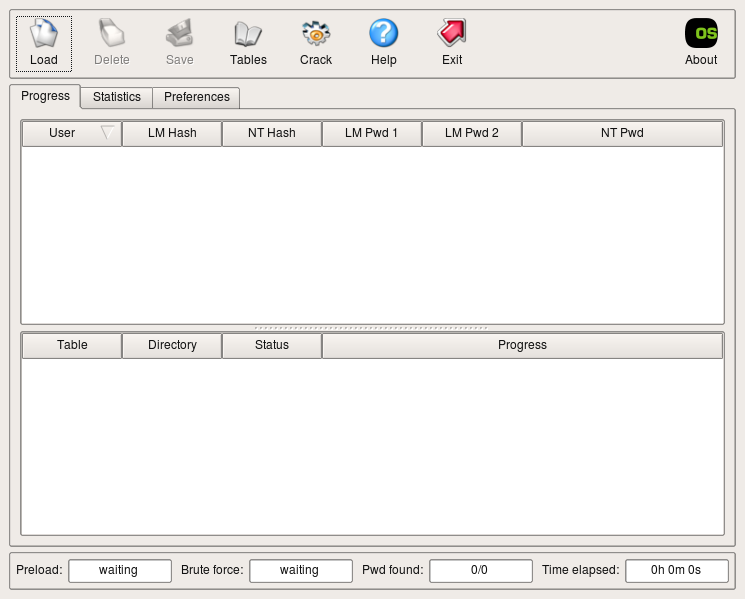

Installing Ophcrack in Ubuntu
by d3hydr8 > www.darkc0de.com
date: 07/29/08 Installing Ophcrack in Ubuntu 1.) Do you have the universe repository enabled? In Synaptic, go to Settings->Repositories and make sure the universe repository is enabled. sudo apt-get update 2.) After your sure to have universe respository enabled. sudo apt-get build-dep ophcrack 3.) This will check and install any dependencies Ophcrack might need. You should see something like this. d3hydr8@linuxbox:~$ sudo apt-get build-dep ophcrack Reading package lists... Done Building dependency tree Reading state information... Done The following NEW packages will be installed: autotools-dev dpatch libatk1.0-dev libcairo2-dev libexpat1-dev libfontconfig1-dev libglib2.0-dev libgtk2.0-dev libice-dev libpango1.0-dev libpixman-1-dev
libsm-dev libssl-dev libxcomposite-dev libxcursor-dev libxdamage-dev libxfixes-dev libxft-dev libxi-dev libxinerama-dev libxrandr-dev libxrender-dev x11proto-composite-dev x11proto-damage-dev x11proto-fixes-dev x11proto-randr-dev x11proto-render-dev x11proto-xinerama-dev
0 upgraded, 28 newly installed, 0 to remove and 0 not upgraded. Need to get 7963kB of archives. After this operation, 26.9MB of additional disk space will be used. Do you want to continue [Y/n]? Y 4.) Type Y and hit Enter to install the dependencies. 5.) Now we need to download the source. wget http://downloads.sourceforge.net/ophcrack/ophcrack-3.0.1.tar.bz2 If the version has changed just check: http://ophcrack.sourceforge.net/download.php 6.) Now ophcrack-3.0.1.tar.bz2 should be saved in your current directory. Lets open it up. tar -xjvf ophcrack-3.0.1.tar.bz2 7.) Now you should see a directory called ophcrack-3.0.1 . Lets move in to compile. cd ophcrack-3.0.1 ./configure *** If you get an error like this: checking for Qt4 version of qmake... configure: error: ophcrack requires Qt toolkit version 4.3 or later. Please disable the GUI via '--disable-gui', or see http://www.trolltech.com/ to obtain it. Use: sudo apt-get install libqt4-dev and then just re-configure or if you prefer not to use the GUI re-configure with the option --disable-gui 8.) When it is done compiling you should see something like this. ==================================================== ophcrack has been successfully configured as follow ==================================================== Install directory: /usr/local GUI: yes Debugging: no ==================================================== Now enter 'make' to compile followed by 'make install' to install 9.) Now just enter the final installation commands. make make install make clean rm ../ophcrack-3.0.1.tar.bz2 10.) Now you can test your installation by typing the command ophcrack  11.) Now lets add it to the Gnome menu sudo mv /usr/share/app-install/desktop/ophcrack.desktop /usr/share/applications/Ophcrack.desktop sudo mv /usr/share/app-install/icons/ophcrack.xpm /usr/share/pixmaps/ophcrack.xpm After that you can find Ophcrack in the Gnome menu under Applications -> Other. 12.) Ophcrack works with rainbow tables so go pick one up. http://ophcrack.sourceforge.net/tables.php 13.) Happy Cracking!!!